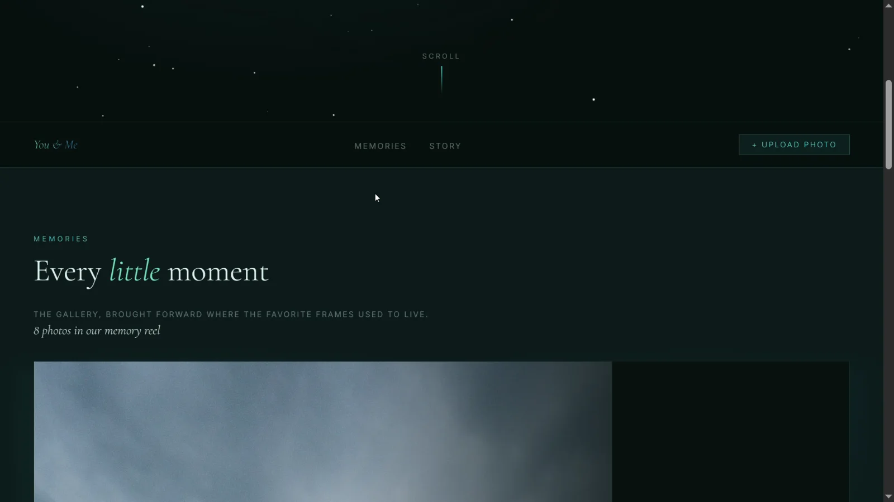
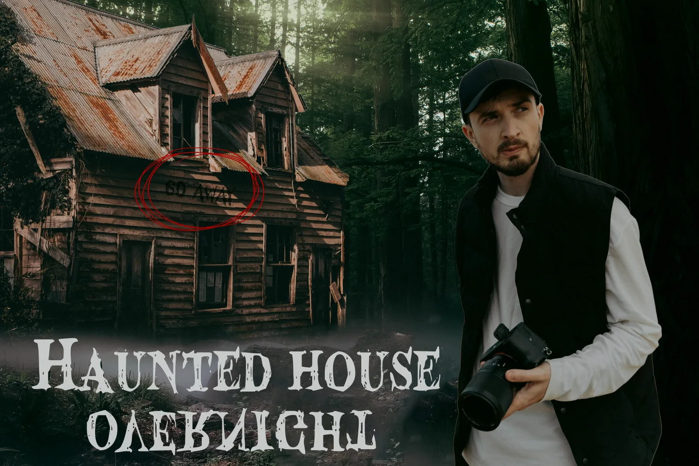
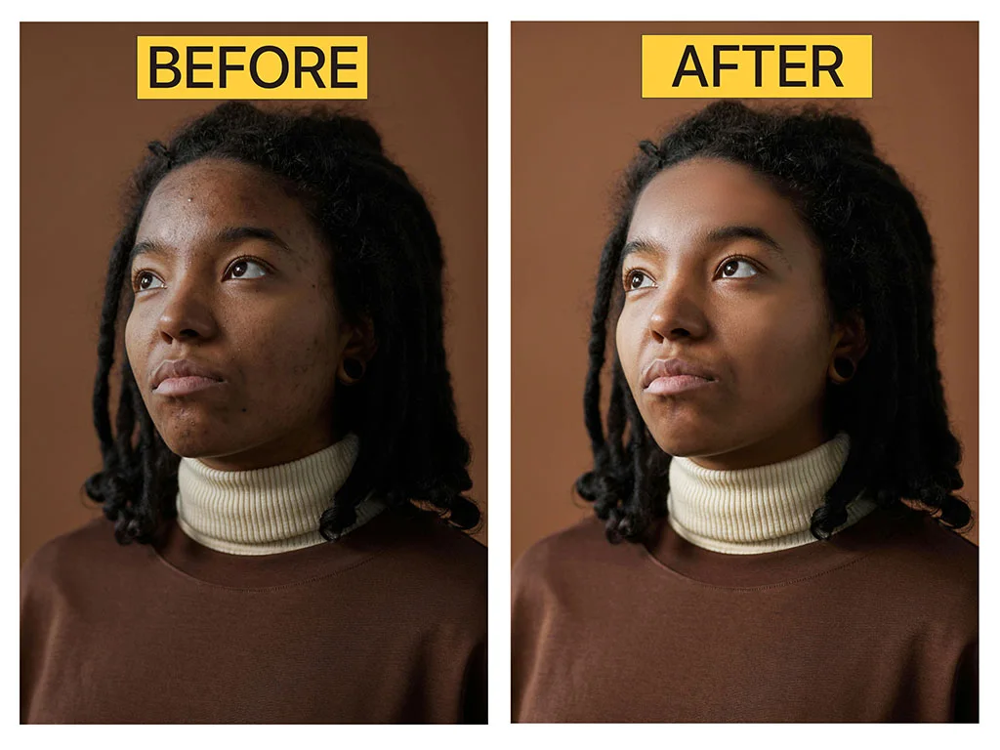

Complete
Gallery V2
A responsive masonry gallery with smooth visual filtering.
Orbit energy100%
03 / Project orbit
A working archive of web experiences, small applications, image studies, and tools—each one a point where visual thinking meets practical code.
Selected transmissions
Filter the archive by discipline. Every record below is drawn from Chel's published portfolio.
A responsive image gallery with a masonry layout and smooth filtering.
A PHP PPE inventory tracker designed around records and expiration alerts.
A private company monitoring system for Mitsubishi and Hyundai General Santos.
An HTML expense tracker with visual charts and budget monitoring.

A thumbnail study using bold hierarchy, subject emphasis, and high-contrast storytelling.

A photo cleanup and tonal-correction study finished with a natural look.
A Next.js experience bringing projects, photography, and writing into one portfolio.
A vehicle-browsing concept with clear booking paths and motion-led presentation.